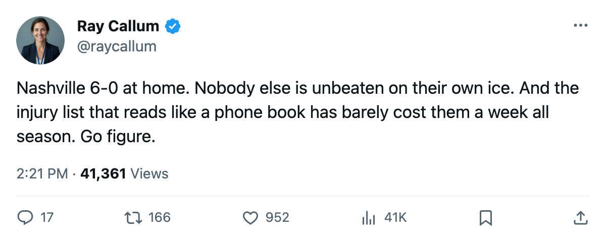

Numbers Game: Nashville Is 6-0 at Home, and the League's Most Injured Club Has Barely Bled
17 injury spells, 33 days lost. Same spell count as Pittsburgh, a third of the days.
 Ray CallumSenior correspondent · Home Ice Network
Ray CallumSenior correspondent · Home Ice Network
 Nashville Predators is 6-0 at home this season. No other club in the league has an unbeaten record on its own ice. The Predators took their fourth straight win last night, 4-3 over Columbus, and sit 2nd in the Western Conference with 26 points on 17 games.
Nashville Predators is 6-0 at home this season. No other club in the league has an unbeaten record on its own ice. The Predators took their fourth straight win last night, 4-3 over Columbus, and sit 2nd in the Western Conference with 26 points on 17 games.
The other number is the injury ledger. Nashville has carried 17 injury spells this season, tied with Pittsburgh for the most in the league. The difference is what those spells cost: 33 days lost for Nashville, 119 for Pittsburgh.
| Club | Spells | Days Lost |
|---|---|---|
| Nashville Predators | 17 | 33 |
 Pittsburgh Penguins Pittsburgh Penguins | 17 | 119 |
Only one Nashville player sits on the current injured list: defenseman Andrew Ference73, a back that kept him out since late October, targeted back 2005-11-29. The rest of the spell list is a who's who of day-to-day names:  David Legwand88 has been through three separate designation windows without a named part,
David Legwand88 has been through three separate designation windows without a named part,  Glen Murray81 and
Glen Murray81 and  Tomas Vokoun90 appeared and vanished quickly. The league never named a body part for most of them.
Tomas Vokoun90 appeared and vanished quickly. The league never named a body part for most of them.
Vokoun has started 11 games and Jan Lasak75 6, a platoon that has held together through the nicking. The Predators give up 44 goals in 17 games, which ranks them 7th in the conference. They score 50, good for 5th. Neither number explains how a team goes 6-0 at home by mid-November.
Five of those six wins came by 3+ goals. Columbus got within one last night on the road, and the Predators closed it out. They open a three-game road trip tonight at Chicago, then visit Colorado on 2005-11-21 and Minnesota on 2005-11-23. The road record is 6-5.
The injury pattern says the bodies hold up. Whether the home form travels is the next week's business.
